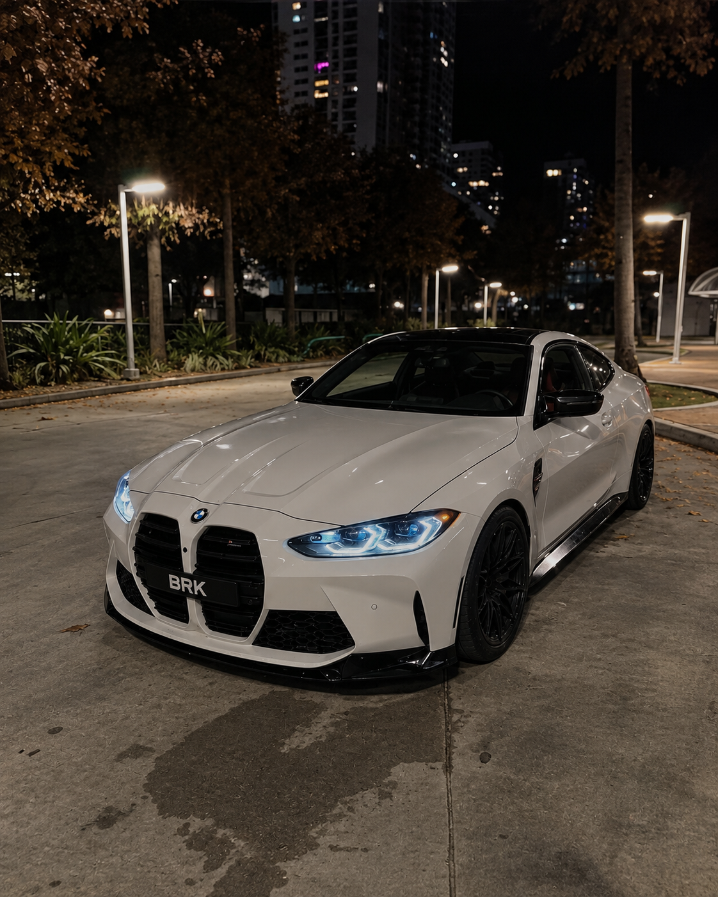
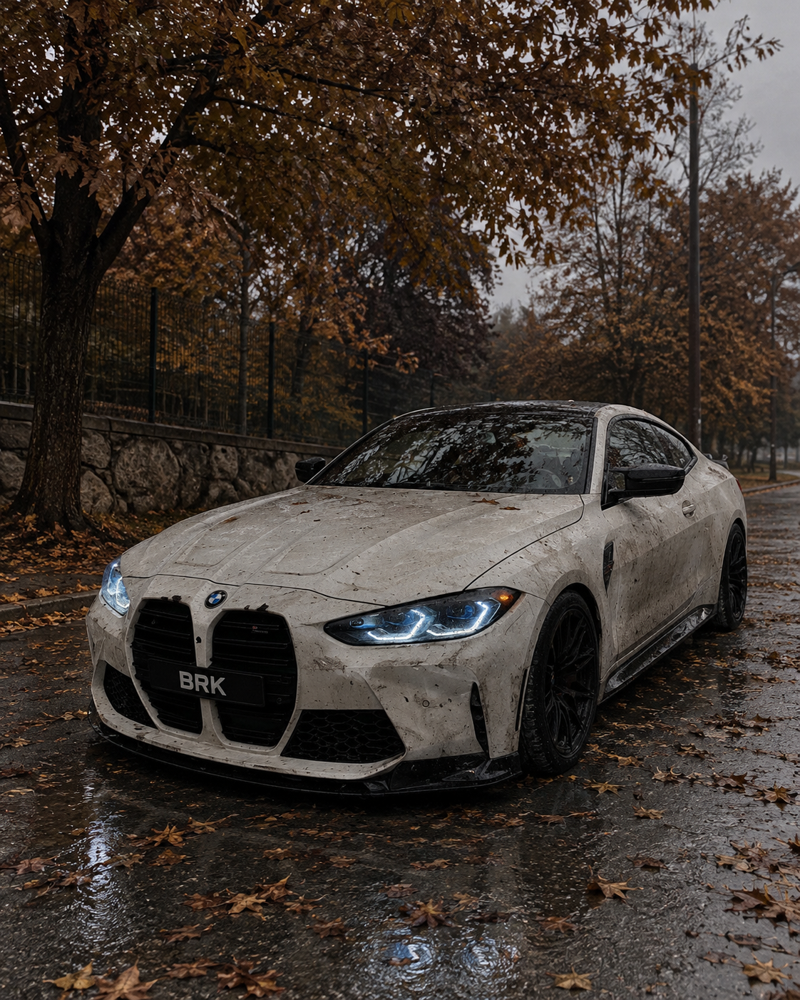

İşlerimiz
Detay, her aşamada önemlidir.
Atölyemizden kısa bir video ve araç bakım uygulamalarını anlatan görsel seçkisi.
Ana Sayfa / İşlerimizBRK Garage · Atölyeden
Uygulama sürecinden bir kare.
Aracınıza uygun hizmet ve fiyat bilgisi için marka, model ve talebinizi bize iletin.
Teklif isteÖncesi & sonrası
Farkı kaydırarak görün.
Aynı BMW’nin uygulama öncesi ve sonrası görünümünü ayırıcıyı kaydırarak karşılaştırın.


Ayırıcıyı sağa veya sola sürükleyin.
Detaylardan seçki
Parlaklık, özen ve koruma.
Galerideki fotoğraflar Pixabay’dan alınmış temsilî görsellerdir. BRK Garage’ın kendi uygulamaları bu videoda ve yeni atölye fotoğrafları geldikçe paylaşılacak.